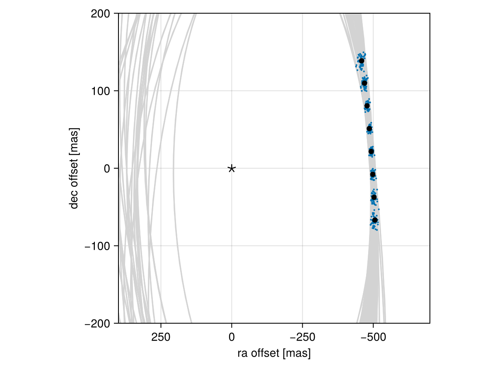

Posterior Predictive Checks
A posterior predictive check compares our true data with simulated data drawn from the posterior. This allows us to evaluate if the model is able to reproduce our observations appropriately. Samples drawn from the posterior predictive distribution should match the locations of the original data.
To demonstrate, we will fit a model to relative astrometry data:
using Octofitter
using Distributions
astrom_like = PlanetRelAstromLikelihood(Table(;
epoch= [50000,50120,50240,50360,50480,50600,50720,50840,],
ra = [-505.764,-502.57,-498.209,-492.678,-485.977,-478.11,-469.08,-458.896,],
dec = [-66.9298,-37.4722,-7.92755,21.6356, 51.1472, 80.5359, 109.729, 138.651,],
σ_ra = fill(10.0, 8),
σ_dec = fill(10.0, 8),
cor = fill(0.0, 8)
))
@planet b Visual{KepOrbit} begin
a ~ truncated(Normal(10, 4), lower=0, upper=100)
e ~ Uniform(0.0, 0.5)
i ~ Sine()
ω ~ UniformCircular()
Ω ~ UniformCircular()
θ ~ UniformCircular()
tp = θ_at_epoch_to_tperi(system,b,50420) # reference epoch for θ. Choose an MJD date near your data.
end astrom_like
@system Tutoria begin
M ~ truncated(Normal(1.2, 0.1), lower=0)
plx ~ truncated(Normal(50.0, 0.02), lower=0)
end b
model = Octofitter.LogDensityModel(Tutoria)
using Random
Random.seed!(0)
chain = octofit(model)Chains MCMC chain (1000×28×1 Array{Float64, 3}):
Iterations = 1:1:1000
Number of chains = 1
Samples per chain = 1000
Wall duration = 4.25 seconds
Compute duration = 4.25 seconds
parameters = M, plx, b_a, b_e, b_i, b_ωy, b_ωx, b_Ωy, b_Ωx, b_θy, b_θx, b_ω, b_Ω, b_θ, b_tp
internals = n_steps, is_accept, acceptance_rate, hamiltonian_energy, hamiltonian_energy_error, max_hamiltonian_energy_error, tree_depth, numerical_error, step_size, nom_step_size, is_adapt, loglike, logpost, tree_depth, numerical_error
Summary Statistics
parameters mean std mcse ess_bulk ess_tail r ⋯
Symbol Float64 Float64 Float64 Float64 Float64 Floa ⋯
M 1.1843 0.0918 0.0037 611.5929 634.2121 1.0 ⋯
plx 50.0005 0.0186 0.0006 994.9333 602.8178 1.0 ⋯
b_a 11.5517 2.2659 0.1536 201.4799 443.3010 1.0 ⋯
b_e 0.1654 0.1102 0.0061 347.5423 569.8099 0.9 ⋯
b_i 0.6143 0.1621 0.0118 206.2884 192.7433 1.0 ⋯
b_ωy -0.0754 0.7286 0.0601 179.9158 671.5943 1.0 ⋯
b_ωx -0.1237 0.6861 0.0531 199.7331 717.7318 0.9 ⋯
b_Ωy -0.1948 0.7351 0.0932 83.3103 401.5270 1.0 ⋯
b_Ωx -0.0687 0.6603 0.0736 98.7948 414.3169 0.9 ⋯
b_θy 0.0748 0.0103 0.0003 1040.7568 601.5327 0.9 ⋯
b_θx -1.0051 0.0998 0.0037 810.0565 607.1815 0.9 ⋯
b_ω -0.4944 1.8304 0.1200 309.6136 527.4720 0.9 ⋯
b_Ω -0.6878 1.9175 0.2228 98.9357 376.8043 1.0 ⋯
b_θ -1.4965 0.0074 0.0002 1222.0556 743.7114 0.9 ⋯
b_tp 42809.0018 5055.7265 295.1684 296.6847 456.5483 1.0 ⋯
2 columns omitted
Quantiles
parameters 2.5% 25.0% 50.0% 75.0% 97.5%
Symbol Float64 Float64 Float64 Float64 Float64
M 1.0061 1.1238 1.1839 1.2458 1.3686
plx 49.9622 49.9882 50.0007 50.0136 50.0352
b_a 8.1875 10.0036 11.0807 12.8746 16.6702
b_e 0.0076 0.0725 0.1521 0.2395 0.4030
b_i 0.2398 0.5172 0.6256 0.7275 0.8921
b_ωy -1.0785 -0.7613 -0.2271 0.6625 1.0645
b_ωx -1.0593 -0.7481 -0.2444 0.5181 1.0363
b_Ωy -1.1078 -0.8509 -0.4219 0.5735 1.0648
b_Ωx -1.0449 -0.6551 -0.1970 0.5186 1.0534
b_θy 0.0558 0.0672 0.0741 0.0811 0.0961
b_θx -1.2150 -1.0736 -0.9963 -0.9354 -0.8308
b_ω -3.0110 -2.1623 -0.6065 0.9519 2.9172
b_Ω -3.0324 -2.4975 -1.2905 0.9049 2.8774
b_θ -1.5106 -1.5014 -1.4964 -1.4913 -1.4817
b_tp 30826.5295 40119.6258 43884.9979 46180.4474 49976.9549
We now have our posterior as approximated by the MCMC chain. Convert these posterior samples into orbit objects:
# Instead of creating orbit objects for all rows in the chain, just pick
# every twentieth row.
ii = 1:20:1000
orbits = Octofitter.construct_elements(chain, :b, ii)50-element Vector{Visual{KepOrbit{Float64}, Float64}}:
Visual{KepOrbit{Float64}, Float64}(KepOrbit(12.0, 0.248, 0.751, -2.41, 3.17, 40700.0, 1.21), 50.02213822882603, 4.123474271660315e6)
Visual{KepOrbit{Float64}, Float64}(KepOrbit(18.0, 0.409, 0.847, 0.251, 4.4, 50000.0, 1.31), 49.99651939591401, 4.125587190712663e6)
Visual{KepOrbit{Float64}, Float64}(KepOrbit(10.7, 0.157, 0.629, -1.19, 3.69, 46400.0, 1.2), 50.00383241021301, 4.124983827397028e6)
Visual{KepOrbit{Float64}, Float64}(KepOrbit(12.6, 0.135, 0.561, 1.77, 3.75, 36100.0, 1.11), 50.02100157976882, 4.1235679711664277e6)
Visual{KepOrbit{Float64}, Float64}(KepOrbit(11.7, 0.0759, 0.625, 2.71, 0.587, 47400.0, 1.19), 49.99635770603183, 4.1256005329987286e6)
Visual{KepOrbit{Float64}, Float64}(KepOrbit(14.2, 0.0304, 0.815, -0.666, 0.323, 35400.0, 1.18), 50.027759883015236, 4.1230109139871434e6)
Visual{KepOrbit{Float64}, Float64}(KepOrbit(10.6, 0.0661, 0.6, -1.55, 1.26, 40200.0, 1.05), 49.98692096218849, 4.1263793814390893e6)
Visual{KepOrbit{Float64}, Float64}(KepOrbit(8.57, 0.206, 0.273, 1.57, 5.94, 45300.0, 1.13), 50.032053513969274, 4.122657087069382e6)
Visual{KepOrbit{Float64}, Float64}(KepOrbit(9.67, 0.244, 0.492, -2.34, 3.3, 43700.0, 1.18), 49.983471318976115, 4.126664166313954e6)
Visual{KepOrbit{Float64}, Float64}(KepOrbit(16.6, 0.207, 0.804, -0.604, 6.27, 29900.0, 1.17), 50.008845226698604, 4.1245703448053175e6)
⋮
Visual{KepOrbit{Float64}, Float64}(KepOrbit(16.3, 0.0949, 0.998, 1.32, 0.373, 39700.0, 1.33), 49.96499986308315, 4.1281897441252624e6)
Visual{KepOrbit{Float64}, Float64}(KepOrbit(15.7, 0.253, 0.864, 0.117, 6.26, 33000.0, 1.15), 50.0158150989912, 4.12399557203578e6)
Visual{KepOrbit{Float64}, Float64}(KepOrbit(12.6, 0.156, 0.748, 2.53, 0.413, 46800.0, 1.34), 49.995347832037716, 4.1256838674862166e6)
Visual{KepOrbit{Float64}, Float64}(KepOrbit(9.09, 0.195, 0.496, 2.91, 4.28, 44100.0, 1.14), 49.975986226603005, 4.1272822324054884e6)
Visual{KepOrbit{Float64}, Float64}(KepOrbit(13.6, 0.356, 0.693, 0.545, 5.74, 36700.0, 1.29), 50.00037995640886, 4.1252686515547517e6)
Visual{KepOrbit{Float64}, Float64}(KepOrbit(7.33, 0.417, 0.31, -2.17, 3.58, 46700.0, 1.31), 49.99940149779303, 4.125349380614177e6)
Visual{KepOrbit{Float64}, Float64}(KepOrbit(8.53, 0.307, 0.33, -1.75, 2.78, 44500.0, 1.03), 50.02029743510755, 4.1236260193692804e6)
Visual{KepOrbit{Float64}, Float64}(KepOrbit(9.33, 0.155, 0.482, 0.501, 0.736, 44900.0, 1.27), 50.03708987538203, 4.1222421310612876e6)
Visual{KepOrbit{Float64}, Float64}(KepOrbit(11.4, 0.0786, 0.513, -0.29, 0.333, 39400.0, 0.982), 49.98430566113103, 4.126595283695148e6)Calculate and plot the location the planet would be at each observation epoch:
using CairoMakie
epochs = astrom_like.table.epoch' # transpose
x = raoff.(orbits, epochs)[:]
y = decoff.(orbits, epochs)[:]
fig = Figure()
ax = Axis(
fig[1,1], xlabel="ra offset [mas]", ylabel="dec offset [mas]",
xreversed=true,
aspect=1
)
for orbit in orbits
Makie.lines!(ax, orbit, color=:lightgrey)
end
Makie.scatter!(
ax,
x, y,
markersize=3,
)
fig
Makie.scatter!(ax, astrom_like.table.ra, astrom_like.table.dec,color=:black, label="observed")
Makie.scatter!(ax, [0],[0], marker='⋆', color=:black, markersize=20,label="")
Makie.xlims!(400,-700)
Makie.ylims!(-200,200)
fig
Looks like a great match to the data! Notice how the uncertainty around the middle point is lower than the ends. That's because the orbit's posterior location at that epoch is also constrained by the surrounding data points. We can know the location of the planet in hindsight better than we could measure it!
You can follow this same procedure for any kind of data modelled with Octofitter.